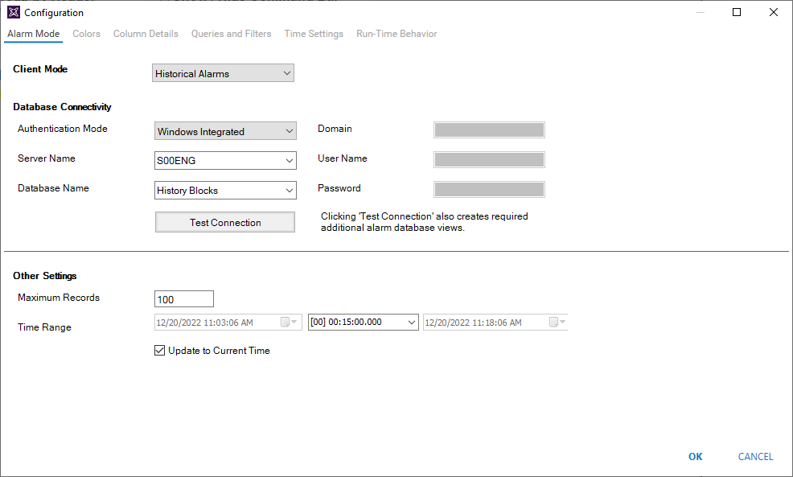
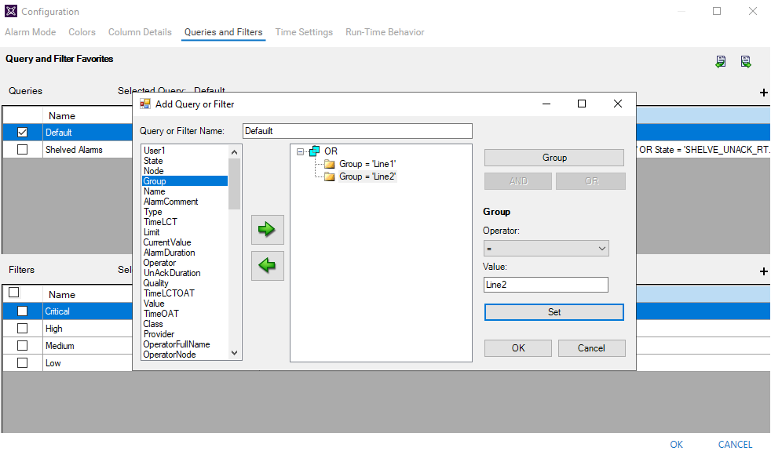

Module 9 — Alarms and Events | Pages 571-572

Section 3 – Logged Alarms and Events Visualization
Section 3 – Logged Alarms and Events Visualization
Introduction
Alarm and event data can be logged with Historian to history blocks or to the A2ALMDB database.
History blocks are files in a proprietary format that store plant data and alarm and event data.
A2ALMDB is a SQL Server database that stores alarm and event data generated by Application
Server. Alarm and event data can also be logged with the legacy Alarm DB Logger application,
which stores alarms and events in a SQL Server database, which is created with a default name of
WWALMDB.
To log alarm and event data from automation objects, you need to enable the host AppEngine with
storage to historian and specify a Historian server. Additionally, in the Alarms and Events
Configuration dialog box, you can enable historizing alarms by alarm severity and historizing
events by type.
In the ViewApp, you can use the AlarmApp to query historical alarms and events.
Configure AlarmApp for Historical Alarms and Events
You can configure the AlarmApp to show historical alarms and events. In the AlarmApp
configuration editor, on the Alarm Mode page, set Client Mode to Historical Alarms, Historical
Events, or Historical Alarms and Events. Options for configuring database connectivity and other
settings appear.
Database Connectivity settings include:
Authentication Mode: Authentication methods for connecting to the specified database.
Server Name: Name of the server hosting the alarms and events database.
Database Name: The name of the database where alarms and events are stored. History
Blocks is also available in the list.
This section introduces alarm and event logging, and describes how to configure the AlarmApp to
display logged alarms and events.

Login Information: Depending on which authentication mode is selected, additional
fields may appear for specifying login information for the database, including Domain,
User Name, and Password.
Test Connection: Verify the connectivity to the specified database using the provided
authentication information.
Other Settings include:
Maximum Records: The maximum number of records to view in the AlarmApp.
Time Range: The time range settings to retrieve historical alarms and events. It can be
specified with settings such as start time, end time, and interval. Start time and end time
are only available when Update to Current Time is unchecked.
Update to Current Time: Determines if using the current time as the end time to retrieve
historical alarms and events. It is checked by default, and the start time is automatically
updated based on the selected time interval.
Query Historical Alarms and Events
To query historical alarms and events, you can create queries and filters. The queries and filters
follow the SQL Server database query rules.
For example, the following shows the default query configured to display historical alarms from the
Line1 and Line2 areas.
At runtime, you can use a Requery button to retrieve the alarms and events based on the selected
query.
Review the key concepts section above for the core topics discussed.
Consider how the concepts in this lesson fit into the broader System Platform and OMI framework.